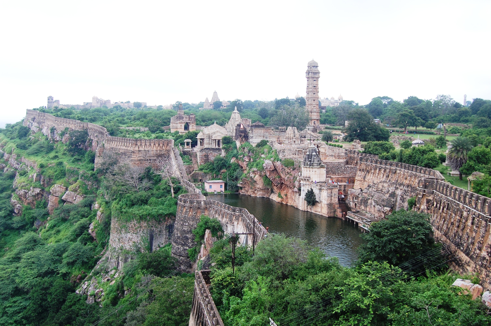
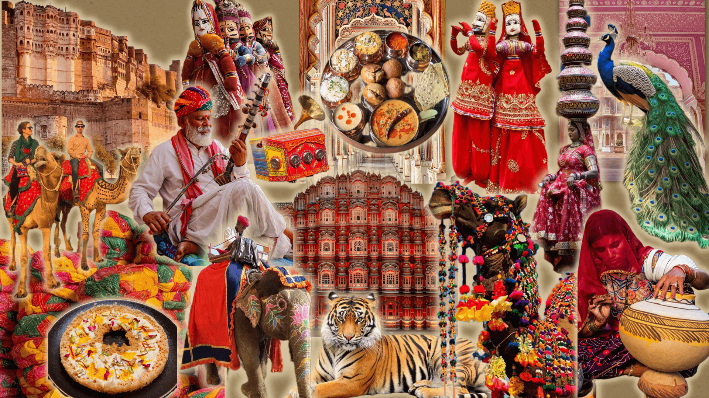
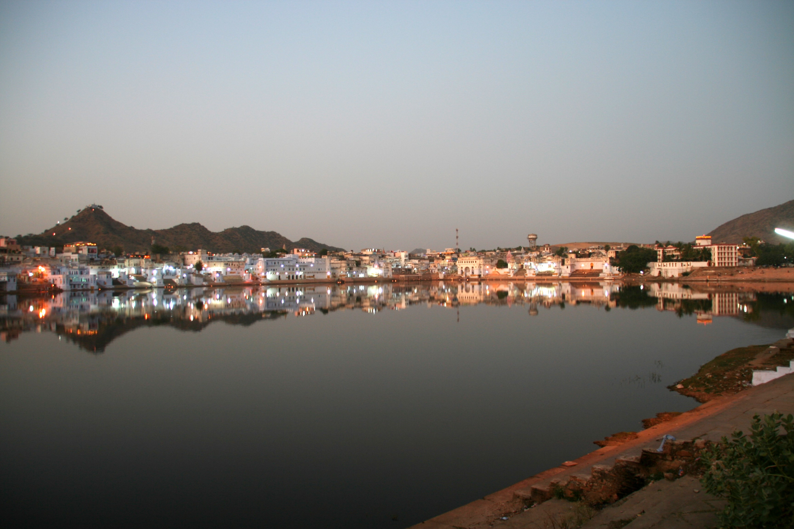
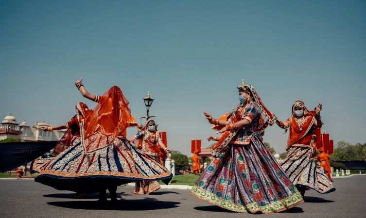
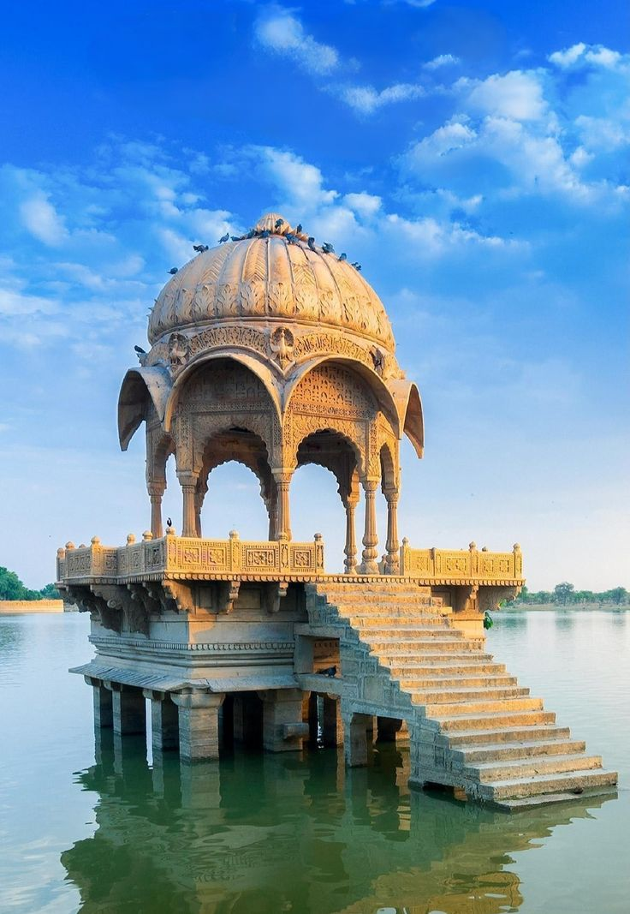

 |
“Land of Royal Heritage, Forts, and Desert Culture” |
Rajasthan is the largest state of India, located in the north-western region. It is famous for its desert landscapes and rich cultural heritage.
Rajasthan has a long and powerful history that goes back to ancient times.
In early periods, the region was home to the Indus Valley–related settlements and later various tribes and kingdoms.
During the medieval period, Rajasthan came to be known as Rajputana, meaning “the land of the Rajputs.”
Rajput kings ruled different parts of the region and were famous for their bravery, honor, and love for their homeland.
They built strong forts and palaces to protect their kingdoms and people.
Rajasthan often faced invasions, but the Rajputs defended their land with courage and sacrifice.
Stories of heroism, loyalty, and sacrifice became an important part of Rajasthani history and folklore.
Despite frequent wars, art, architecture, and culture continued to flourish.
After India gained independence in 1947, the princely states of Rajputana were united.
In 1949, these states were merged to form the modern state of Rajasthan.
Today, Rajasthan proudly preserves its historical legacy while progressing as a modern Indian state.
Rajasthan has a deeply rooted culture that reflects courage, tradition, and pride.
The lifestyle of the people is influenced by the desert climate and historical background.
People value family bonds, respect elders, and follow traditional customs in daily life.
Hospitality is considered a sacred duty, and guests are treated with great warmth and honor.
Traditional clothing is colorful and well suited to the hot climate of the region.
Men usually wear turbans, dhotis, and kurtas, while women wear ghagra, choli, and odhani.
Folk music and dance are an essential part of social and cultural life.
These performances tell stories of heroes, love, and everyday village life.
Rajasthan is also famous for its rich handicraft tradition.
Artisans create beautiful pottery, embroidery, jewelry, leather goods, and textiles.
Village life in Rajasthan is simple, disciplined, and closely connected to nature.
Despite modernization, people proudly preserve their cultural identity and traditions.
| Season | Months | Temperature(Approx.) | Tourist Crowd Level |
|---|---|---|---|
| Summer | March-June | 30°C to 45°C | Fewer |
| Monsoon | July-September | 25°C to 35°C | Medium |
| Winter | October-February | 5°C to 25°C | High |
Rajasthan has many important cities that reflect its cultural, historical, and economic diversity.
Each city has its own identity shaped by tradition, geography, and lifestyle.
Some cities are known for heritage and culture, while others are centers of education, trade, and industry.
Together, these cities contribute to the development and tourism of Rajasthan.
|
 |
|
 

|


  |
Rajasthan is a land where history and culture blend beautifully. The state is famous for its grand forts and palaces that reflect the royal lifestyle of ancient times. Walking through these historic structures helps visitors imagine the lives of kings and queens and understand India’s rich past.
The vast Thar Desert adds a unique charm to Rajasthan. Camel rides, desert safaris, and cultural evenings under the stars offer memorable experiences for families. Folk music and dance performances make desert nights lively and magical.
Rajasthan is also known for its colorful culture and traditions. Cities and towns display vibrant architecture, traditional clothing, and lively local markets. Handicrafts, puppetry, and folk art show the creative skills of the people.
Festivals bring special energy to the state. Celebrations like Teej, Gangaur, and the Pushkar Fair fill the streets with joy, music, and dance, warmly welcoming visitors to join in.
Apart from deserts, Rajasthan has peaceful lakes, green hills, and wildlife parks that offer calm and natural beauty. Traditional Rajasthani food adds flavor to the journey and brings families together. Overall, Rajasthan offers a perfect mix of history, culture, nature, and warm hospitality.
To book train tickets for traveling in Rajasthan, visit the official railway website irctc.co.in
To book air tickets for traveling in Rajasthan, visit official airline websites or trusted flight booking platforms.